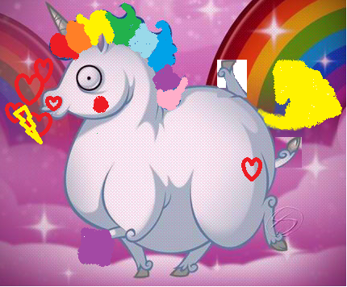

Les POLICORNES débarquent à Kanto!!!Crées par la team Rocket, ils représentent une menace réelle. Faites attention à leurs attaques surnaturelles: Chant des Licornes, Bisous Diablesques et LOLXDMDR!!! Arc-en-ciel, le Policorne le plus puissant, a pulvérisé une tasse de thé! Alors surveillez vos tasses de thé car elles craignent la colère des redoutables Policornes!
-Il y a ci-dessus une photo pour vous aider mais voici quelques indices pour vous aider: une Policorne a toujours des cœurs qui sortent des nasaux. Elles ont toujours des crignères arc-en-ciel. Elles ont souvent des pattes sur le dos. Elles ont souvent des tatouages sur leur popotin. Elles vous regardent tout le temps avec des yeux bizzares ( se référer à l'image).